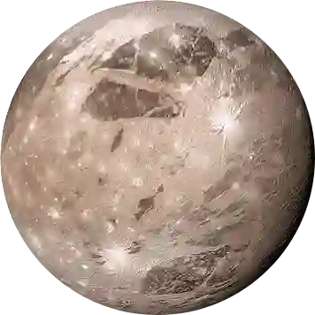
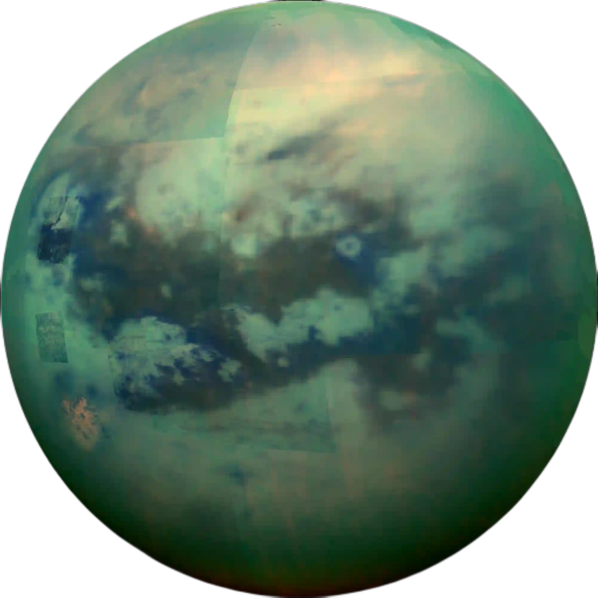
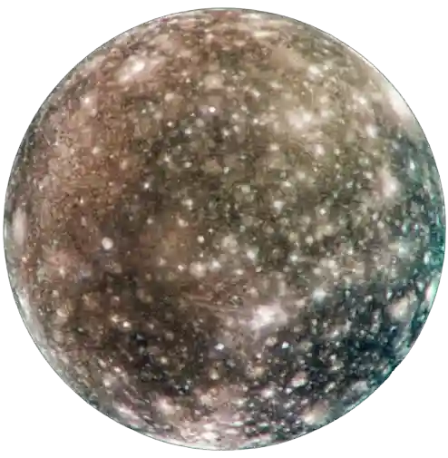
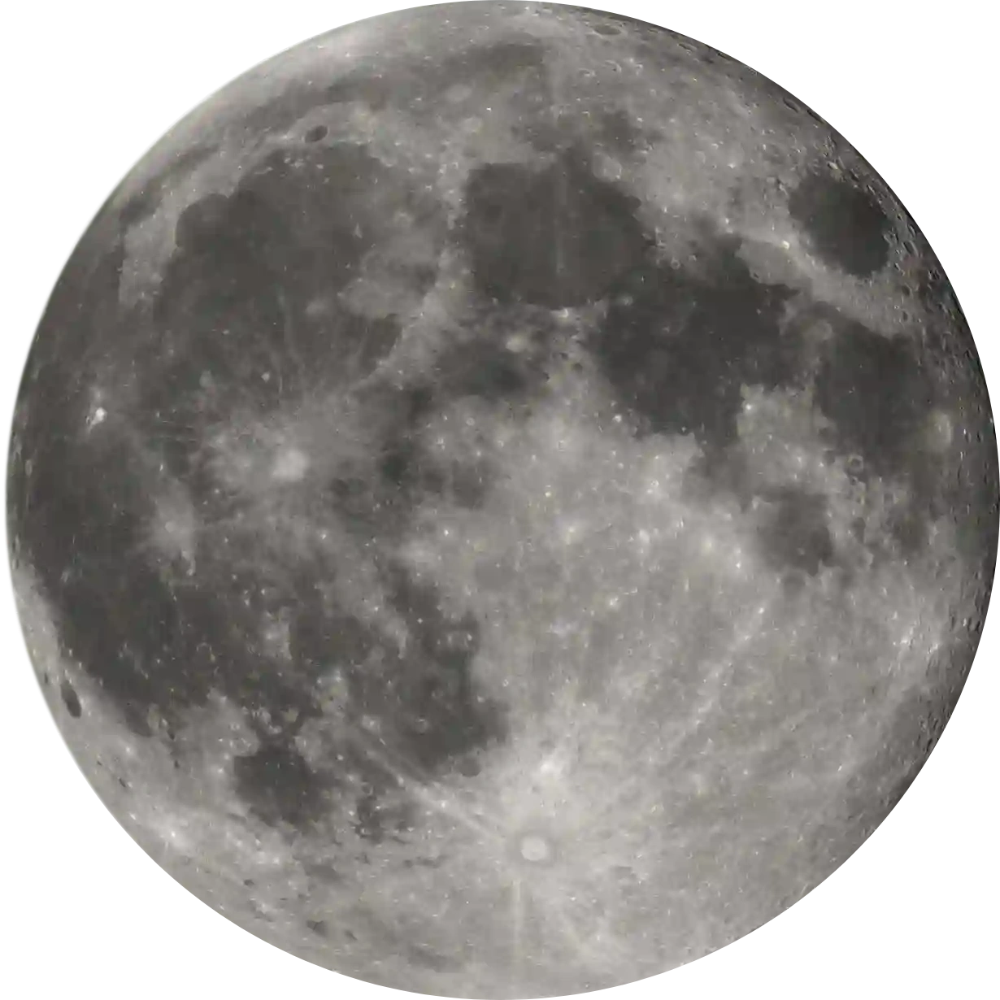
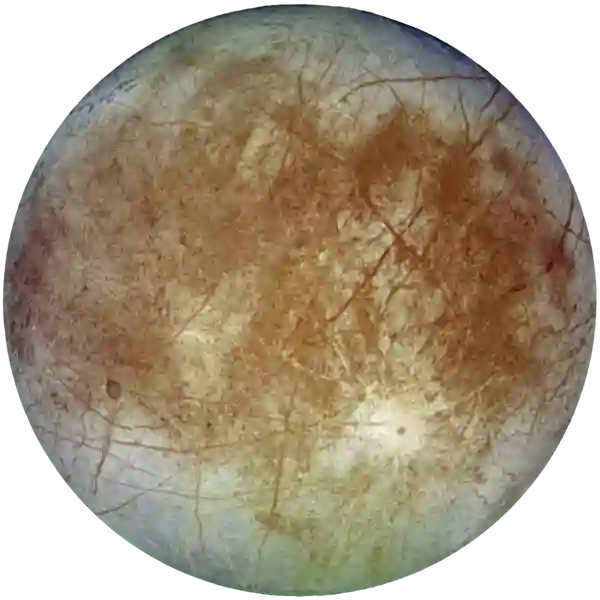
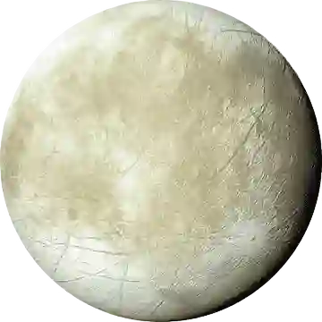
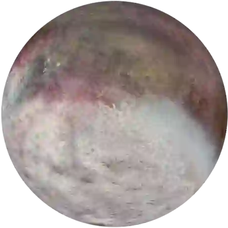

Ganymede
Ganymède est la plus grande lune du système solaire. Elle est faite de glace et de roches et possède même un champ magnétique.D'après certaines théories,on pense qu’il y a un océan sous sa surface.
Titan
Titan est la plus grande lune de Saturne. Elle a une atmosphère épaisse et des lacs de méthane liquide ce qui la caractérise et la rend ainsi unique
Calisto
Callisto est une lune très ancienne et pleine de cratères. Sa surface n’a presque pas changé depuis des milliards d’années.
Io

Io est la lune la plus volcanique du système solaire. Il y a des centaines de volcans actifs qui modifient sa surface en permanence la rendant donc instable.
Lune
La Lune est le seul satellite de la Terre. Elle est couverte de cratères et influence les marées. Elle n’a pas d’atmosphère et sa surface ressemble à celle de Mercure.
Europe
Europe est une lune recouverte de glace brillante.C’est une lune très intéressante pour chercher de la vie.
Encelade
Encelade est une petite lune glacée. Elle projette des geysers d’eau et de glace dans l’espace. Cela montre qu’il y a sûrement un océan sous sa surface.
Triton
Triton est la plus grande lune de Neptune. Elle tourne dans le sens inverse de la planète et sa surface glacée a des geysers d’azote.